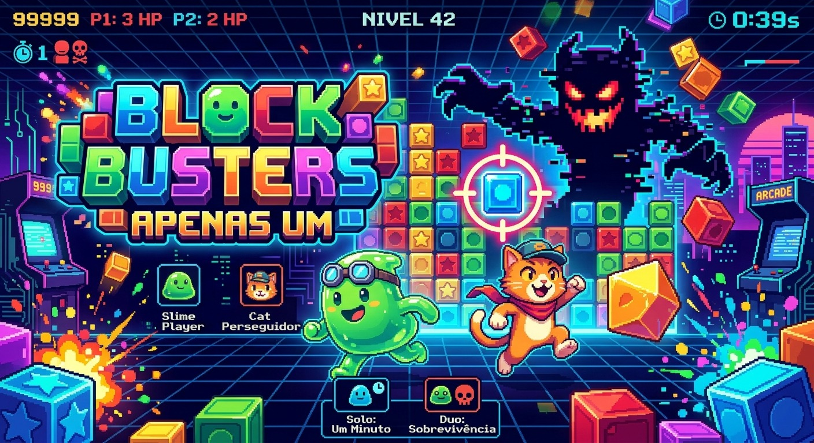

01. Block Busters
EQUIPE: Cursed Abyss (João Fernando Fonseca Ximenes, João Lucas Bagot de Aguiar, Paulo Henrique Viana Ferreira, José Nikolas chaves furtado)
ESCOLARIDADE: Ensino Médio-Técnico
PLATAFORMA: JavaScript (Phaser)
Block Busters é um jogo arcade em pixel art centrado no tema Apenas Um, onde o objetivo central é identificar a única peça com cor ou formato diferente entre várias iguais. No modo solo, o jogador enfrenta o relógio com um limite de apenas um minuto para alcançar a maior pontuação possível. Já no modo duo, existe apenas um monstro perseguidor na arena e, caso reste apenas um jogador vivo, ele pode reviver seu companheiro para continuarem a partida juntos.
🎮 Jogar Agora